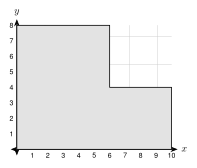
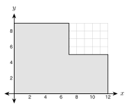

8.6 - Density and Modeling
Moses pours a concrete patio. The truck brings the concrete, but a bigger question is the weight. A cubic foot of concrete is heavy. Will the ground hold it? Will the truck’s load limit allow it?
Volume alone does not answer these questions. You also need density, which tells how heavy a material is for its size. In this lesson you use density to find weight, population density to compare places, scale factors to compare models with real things, and you plan real jobs.
Printable Guided Notes for this lesson (fill-in notes to print and write on)
🔥 Warm Up
Find the volume of a box \(4\) ft by \(2\) ft by \(2\) ft.
A rectangle is \(12\) ft by \(20\) ft. Find its area.
Two similar triangles have scale factor \(3\). A side of the small triangle is \(5\). What is the matching side of the large triangle?
👥 Learn Together
8.6.1 - Density and Weight
Density compares mass (or weight) to volume:
\[ \text{density} = \frac{\text{mass}}{\text{volume}} \]
Rearranged: \(\text{weight} = \text{density} \times \text{volume}\).
| Material | Density |
|---|---|
| water | \(62.4\) lb per ft\(^3\) (or \(1\) g per cm\(^3\)) |
| concrete | about \(150\) lb per ft\(^3\) |
An object floats in water if its density is less than the density of water. It sinks if its density is greater.
Example 1: Weight of a slab

A concrete slab is \(12\) ft by \(20\) ft and \(4\) in thick. Concrete weighs about \(150\) lb per cubic foot. Find the weight.
\(4\) in \(= \frac{1}{3}\) ft.
\[ V = 12 \cdot 20 \cdot \tfrac{1}{3} = 80 \text{ ft}^3 \]
\[ \text{weight} = 150 \cdot 80 = 12{,}000 \text{ pounds} \]
That is \(6\) tons.
\(V = 10 \cdot 15 \cdot \frac{1}{3} = 50\) cubic feet. Weight \(= 150 \cdot 50 = 7500\) pounds.
Example 2: Weight of water
An aquarium is \(4\) ft long, \(2\) ft wide, and \(2\) ft tall. It is full of water. Find the weight of the water.
\(V = 4 \cdot 2 \cdot 2 = 16\) cubic feet.
\[ \text{weight} = 62.4 \cdot 16 = 998.4 \text{ pounds} \]
\(V = 3 \cdot 1.5 \cdot 2 = 9\) cubic feet. Weight \(= 62.4 \cdot 9 = 561.6\) pounds.
Example 3: Will it float?

A wood block is \(10\) cm by \(6\) cm by \(4\) cm. Its mass is \(168\) g. Does it float in water? (Water has density \(1\) g per cm\(^3\).)
\(V = 10 \cdot 6 \cdot 4 = 240\) cm\(^3\).
\[ \text{density} = \frac{168}{240} = 0.7 \text{ g per cm}^3 \]
\(0.7 < 1\), so the block floats.
\(V = 5^3 = 125\) cm\(^3\). Density \(= \frac{1000}{125} = 8\) g per cm\(^3\). \(8 > 1\), so it sinks.
8.6.2 - Population Density
Population density is people per square mile:
\[ \text{population density} = \frac{\text{number of people}}{\text{area in square miles}} \]
Example 4: Compare two cities
City A has \(120{,}000\) people in \(40\) square miles. City B has \(75{,}000\) people in \(15\) square miles. Which is more crowded?
A: \(120{,}000 \div 40 = 3000\) people per square mile.
B: \(75{,}000 \div 15 = 5000\) people per square mile.
City B is more crowded, even though City A has more people.
C: \(90{,}000 \div 36 = 2500\). D: \(48{,}000 \div 20 = 2400\). Town C has the greater density.
Example 5: A county on a map grid

Each unit on the grid is \(1\) mile. The county has \(22{,}400\) people. Find the population density.
Split the county into two rectangles. The bottom one is \(10\) by \(4\). The top one is \(6\) by \(4\).
\[ A = 10 \cdot 4 + 6 \cdot 4 = 40 + 24 = 64 \text{ square miles} \]
\[ \text{density} = \frac{22{,}400}{64} = 350 \text{ people per square mile} \]
Bottom rectangle \(9 \cdot 3 = 27\). Top rectangle \(5 \cdot 4 = 20\). \(A = 47\) square miles.
\(14{,}100 \div 47 = 300\) people per square mile.
8.6.3 - Scaling Lengths, Areas, and Volumes
In Lesson 5.2 you learned that if lengths scale by \(k\), then areas scale by \(k^2\). Volumes scale by \(k^3\).
Lengths: \(\times k\)
Surface areas and other areas: \(\times k^2\)
Volumes (and weights of the same material): \(\times k^3\)
Example 6: Two cubes
A cube has edge \(2\) in. A larger cube has edge \(6\) in. The scale factor is \(k = 3\).
| Small cube | Large cube | Ratio | |
|---|---|---|---|
| edge | \(2\) | \(6\) | \(3\) |
| surface area | \(6 \cdot 4 = 24\) | \(6 \cdot 36 = 216\) | \(9 = 3^2\) |
| volume | \(2^3 = 8\) | \(6^3 = 216\) | \(27 = 3^3\) |
\(k = 2\). Small: \(\pi(9)(5) = 45\pi\). Large: \(\pi(36)(10) = 360\pi\). Ratio \(= 8 = 2^3\).
Example 7: A model boat
A model boat is \(\frac{1}{20}\) of the size of the real boat. The real boat has \(600\) square feet of hull to paint. The real boat holds \(2400\) gallons of water. Its mass is \(3000\) pounds.
The scale factor from the real boat to the model is \(\frac{1}{20}\).
- Hull area: \(600 \cdot \left(\frac{1}{20}\right)^2 = 600 \cdot \frac{1}{400} = 1.5\) square feet.
- Volume: \(2400 \cdot \left(\frac{1}{20}\right)^3 = 2400 \cdot \frac{1}{8000} = 0.3\) gallon.
- Mass, if made of the same material: \(3000 \cdot \frac{1}{8000} = 0.375\) pound.
\(k = \frac{1}{12}\). Weight \(= 2400 \cdot \left(\frac{1}{12}\right)^3 = \frac{2400}{1728} \approx 1.4\) pounds.
Samir says, “If I double every side of a box, the volume doubles.” Test his claim on a box \(2\) by \(3\) by \(4\).
The box has volume \(24\). The doubled box is \(4\) by \(6\) by \(8\) and has volume \(192\). That is \(8\) times larger, not \(2\) times. The volume is multiplied by \(2^3 = 8\).
Make an animal \(10\) times as tall in every direction. Its weight grows like volume, so \(10^3 = 1000\) times. The strength of a leg grows like the area of its cross section, so only \(10^2 = 100\) times. The legs must be thicker than a simple enlargement, or they will break.
8.6.4 - Modeling and Design
Real jobs combine area, volume, density, and unit conversion. Plan in steps: draw it, make the units match, find the volume, then use what you need (cost, weight, bags, or trips).
Example 8: Bags of concrete

A slab is \(12\) ft by \(10\) ft and \(4\) in thick. One \(80\) lb bag of mix makes about \(0.6\) cubic feet of concrete. How many bags are needed?
\(V = 12 \cdot 10 \cdot \frac{1}{3} = 40\) cubic feet.
\[ 40 \div 0.6 \approx 66.7 \]
Round up: \(67\) bags. The bags weigh \(67 \cdot 80 = 5360\) pounds.
\(V = 12 \cdot 16 \cdot \frac{1}{3} = 64\) cubic feet. \(64 \div 0.6 \approx 106.7\), so \(107\) bags. They weigh \(107 \cdot 80 = 8560\) pounds.
Example 9: Which can uses less metal?

Two soup can designs each hold \(500\) cm\(^3\). Design A has radius \(4\) cm. Design B has radius \(5\) cm. Which uses less metal? Round to the nearest tenth.
Find the height from \(V = \pi r^2 h\):
- A: \(h = \dfrac{500}{16\pi} \approx 9.95\) cm. \(SA = 2\pi(4)^2 + 2\pi(4)(9.95) \approx 350.5\) cm\(^2\).
- B: \(h = \dfrac{500}{25\pi} \approx 6.37\) cm. \(SA = 2\pi(5)^2 + 2\pi(5)(6.37) \approx 357.1\) cm\(^2\).
Design A uses less metal.
A: \(h = \frac{400}{16\pi} \approx 7.96\), \(SA \approx 300.5\) cm\(^2\). B: \(h = \frac{400}{36\pi} \approx 3.54\), \(SA \approx 359.5\) cm\(^2\). Can A uses less.
Example 10: How many trips?
A pickup truck carries at most \(2000\) lb. Dry sand weighs about \(100\) lb per cubic foot. A play area is \(12\) ft by \(10\) ft and the sand is \(6\) in deep. How many trips does the truck make?
\(V = 12 \cdot 10 \cdot 0.5 = 60\) cubic feet.
\(\text{weight} = 100 \cdot 60 = 6000\) pounds.
\(6000 \div 2000 = 3\) trips.
\(V = 10 \cdot 9 \cdot \frac{2}{3} = 60\) cubic feet. \(6000 \div 2000 = 3\) trips.
✍️ Practice On Your Own
Density and weight.
Concrete weighs \(150\) lb per cubic foot. A slab is \(15\) ft by \(10\) ft and \(6\) in thick. Find its weight.
A pool is \(20\) ft by \(10\) ft and the water is \(5\) ft deep. Water weighs \(62.4\) lb per cubic foot. Find the weight of the water.
A steel bar is \(2\) in by \(2\) in by \(36\) in. Steel weighs \(0.284\) lb per cubic inch. Find the weight of the bar. Round to the nearest tenth.
An aquarium is \(36\) in by \(15\) in by \(18\) in and full of water. Find the volume in cubic feet, then the weight of the water. (There are \(1728\) cubic inches in \(1\) cubic foot.)
An object has mass \(540\) g and volume \(200\) cm\(^3\). Find its density. Does it float in water?
A block of wood is \(20\) cm by \(10\) cm by \(5\) cm with mass \(700\) g. Find its density. Does it float?
A log is a cylinder with radius \(0.5\) ft and length \(8\) ft. Wood weighs \(40\) lb per cubic foot. Find the weight of the log. Round to the nearest tenth. Does it float?
Population density.
A city has \(90{,}000\) people in \(36\) square miles. Find its population density.
County A has \(48{,}000\) people in \(80\) square miles. County B has \(63{,}000\) people in \(90\) square miles. Which county is more crowded?

Each unit on the grid is \(1\) mile. The county has \(26{,}400\) people. Find the area and the population density.
A town has population density \(480\) people per square mile and an area of \(25\) square miles. How many people live there?
A village has \(7200\) people and a density of \(90\) people per square mile. Find its area.
Scaling.
Box A is \(2\) by \(3\) by \(4\). Box B is \(6\) by \(9\) by \(12\). Find the surface area and volume of each. How many times larger is each for Box B?
A model ship is \(\frac{1}{100}\) of the size of a real ship. The real ship has a hull surface of \(25{,}000\) m\(^2\) and a volume of \(90{,}000\) m\(^3\). Find the hull area and volume of the model.
A dollhouse is \(\frac{1}{12}\) of the size of a real house. A real room has a floor area of \(120\) square feet. Find the floor area of the model room in square inches. (There are \(144\) square inches in \(1\) square foot.)
A cone-shaped candle \(4\) in tall holds \(6\) oz of wax. A similar candle \(8\) in tall is made of the same wax. How much wax does it hold?
A sphere has radius \(3\) and another has radius \(9\). Find the surface areas and volumes of both. Check that the ratios are \(3^2\) and \(3^3\).
Modeling and design.
A slab is \(15\) ft by \(14\) ft and \(4\) in thick. One \(80\) lb bag makes \(0.6\) cubic feet. How many bags are needed?
A road is \(200\) ft long and \(12\) ft wide. It is covered with gravel \(6\) in deep. A dump truck carries \(10\) cubic yards. How many truck loads are needed?
A pool is \(25\) ft by \(12\) ft and the water is \(4.5\) ft deep. Find the number of gallons (\(1\) ft\(^3 \approx 7.48\) gallons) and the weight of the water (\(62.4\) lb per cubic foot). Round the gallons to the nearest gallon and the weight to the nearest ton (\(2000\) lb).
Two cans each hold \(350\) cm\(^3\). Can A has radius \(3\) cm. Can B has radius \(5\) cm. Which uses less metal? Round to the nearest tenth.
A grain silo is a cylinder with radius \(8\) ft and height \(30\) ft, with a hemisphere on top. Grain weighs about \(45\) lb per cubic foot. How many pounds of grain fill the silo? Round to the nearest thousand pounds.
Test practice
A concrete wall is \(30\) ft long, \(8\) ft high, and \(8\) in thick. Concrete weighs \(150\) lb per cubic foot. What is the weight of the wall?
A. 24,000 lb
B. 36,000 lb
C. 288,000 lb
D. 1,440,000 lbTwo cylinders are similar. The scale factor from the small one to the large one is \(3\). The small cylinder has volume \(50\) cm\(^3\). What is the volume of the large cylinder?
A. 150 cm\(^3\)
B. 450 cm\(^3\)
C. 1,350 cm\(^3\)
D. 4,050 cm\(^3\)
Challenge
A model animal is made \(10\) times as tall, wide, and long. By what factor does its weight grow? By what factor does the area of a leg’s cross section grow? Which grows more, and what does that mean for the legs?
A can with a given volume uses the least metal when its height equals its diameter (\(h = 2r\)). Find the radius, height, and surface area of the best can that holds \(500\) cm\(^3\). Round to the nearest tenth. Compare to Design A in Example 9.